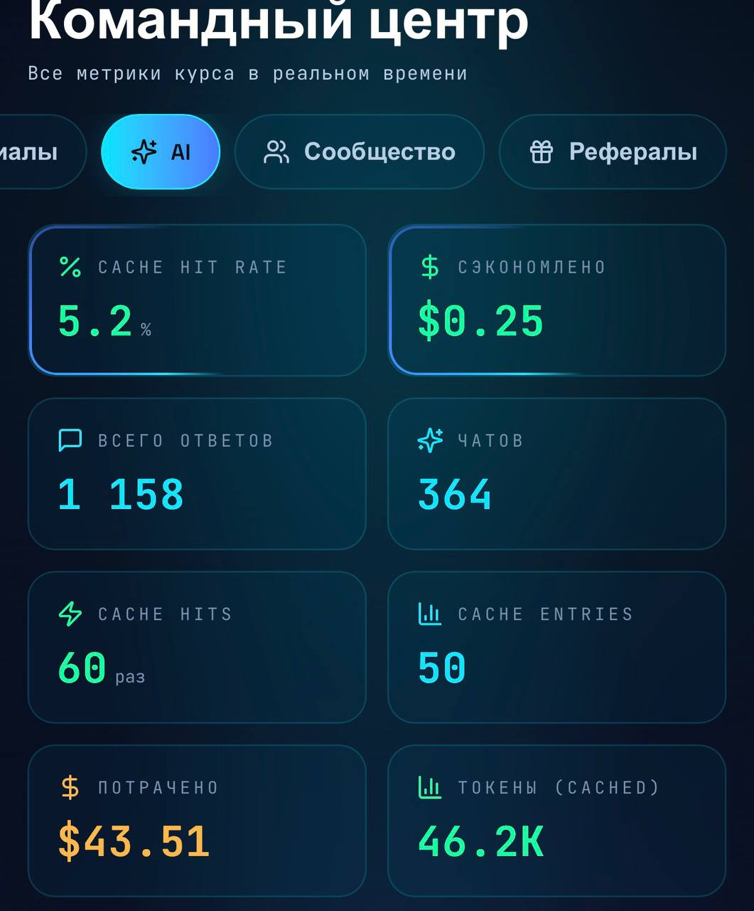
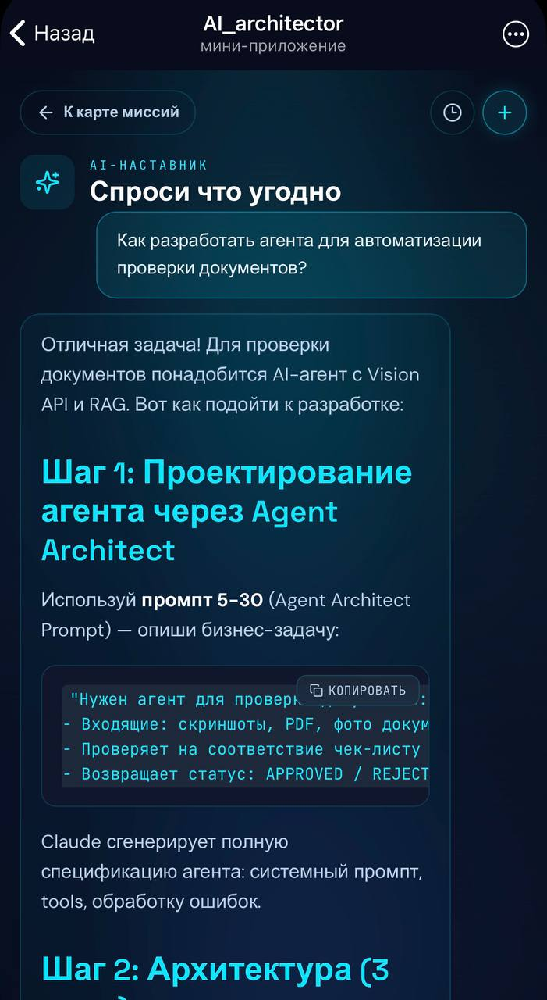
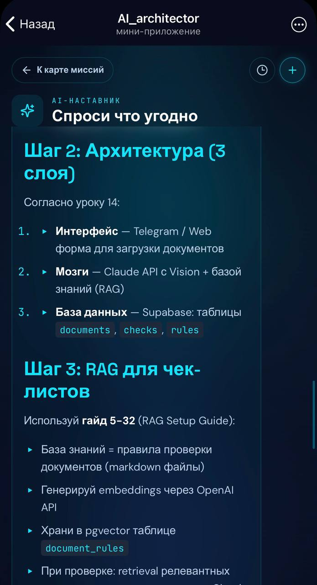
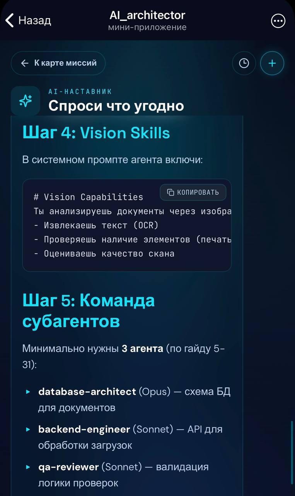
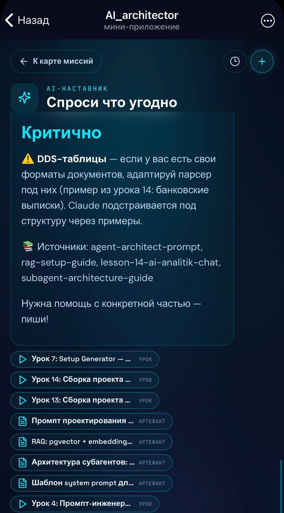
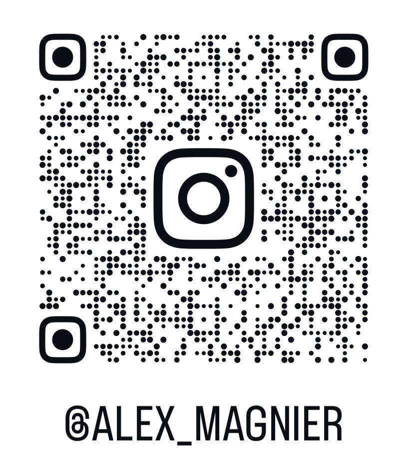

AI для бизнеса · 2026
Через 12 месяцев
нейросети будут
почти бесплатны
Заработает не тот, у кого лучшая модель.
Кто мы
ReveluxAI — AI-консалтинг + разработка
- →Заходим как аналитики → считаем ROI → потом код
- →McKinsey-подход в нише AI-трансформации
- →AI-first: внедряем себе → продаём как услугу
Сдвиг 2026
Ум стал товаром
- ▸DeepSeek V4: −75% навсегда
- ▸Mistral: бесплатная замена тому, что стоило $200/мес
- ▸Прогноз: ещё ×5–10 дешевле за год
Если продукт «прокидывает» запрос к чужой модели — маржи нет.
Непопулярное мнение
SaaS умрёт.
Тот, что построен на перепродаже токенов и обёртке над ИИ.
- ✗Обёртка над API → маржа → 0
- ✗Модель подешевела ×10 → преимущество испарилось
- ✓Выживет: твои данные + память агента + обвязка под нишу
Свежий сигнал рынка
Anthropic не выпустил новую модель.
Выпустил инфраструктуру вокруг агентов.
- ★Multi-agent orchestration
- ★Outcomes
- ★Dreaming
- +Claude Finance (10 готовых агентов) · Add-ins
2026 = год, когда одиночные агенты уступают скоординированным командам: оркестратор → спец-агенты → синтез.
Красная линия
Три эпохи AI-разработки
Вайб-кодинг
болтаешь с AI, генеришь — игрушка
→
Agentic Engineering
собираешь команды агентов под задачи
→
Agent Harness Engineering
2026: строишь СРЕДУ — память, данные, оркестрация ← здесь деньги
Что такое обвязка · harness
Нейросеть = процессор.
Обвязка = всё остальное.
Память
Данные
Инструменты
Оркестрация
Контроль
Посредственная модель + хорошая обвязка > лучшая модель + плохая обвязка
Память · почему это главное
Память — не фича. Это главный тюнинг.
65% → 12%
ошибок у агента Miro — без смены модели, только добавили память
Чем больше ты оцифровал — тем умнее твой агент.
Память · как построить правильно
Правильная память агента = 4 слоя
Контексткороткая память
что агент «держит в руках» прямо сейчас — как оперативка
Вектор + RAGдолгая память
вся история; поиск по смыслу, а не по точным словам
Граф знанийсвязи
кто с кем связан, что из чего следует, почему так решили
Навыкисамообучение
повторяющийся процесс → готовое умение агента
Сессии и документы
→
Граф + вектор
→
Агент достаёт нужное → решает
Не вали всё в один чат. Чем чище разложено — тем умнее агент.
Память · 3 вещи, которые путают
Простыми словами: что есть что
📇 «Картотека»
Память агента
Что агент знает о конкретном клиенте/процессе: имя, тариф, тикет №42. Обычная таблица в БД (SQL), не векторы. Векторный поиск тут не нужен.
📚 «Библиотека по смыслу»
RAG
Подмешивает в ответ релевантные куски из базы знаний и документации. Запросы разные — смысл один. Здесь векторный поиск оправдан.
🌙 «Ночной архивариус»
Dreaming (Anthropic)
Между сессиями переструктурирует и чистит память агента. Не замена базе и RAG — это обслуживание памяти.
Запомни просто: Память — это таблица. RAG — это поиск. Dreaming — это уборка.
Доказательство
Мы построили это раньше, чем Anthropic объявил
Задокументировано как решение (ADR-0006) — ДО их анонса
Задача (голос CEO)
→
🎛 Дирижёр
→
👥 11 агентов-спецов
→
🧠 Память
→
✅ Результат
| Что говорит Anthropic | Что у нас |
|---|---|
| Один дирижёр раздаёт задачи | ✓ есть |
| Команда узких агентов-специалистов | ✓ 11 агентов под функции бизнеса |
| Каждый помнит только своё | ✓ у каждого своя полка памяти |
| Видна цена каждого шага | ✓ считаем стоимость каждого действия |
Кейс · собственный
Мы управляем компанией голосом
CRM
Задачи (AI-приоритет)
Проекты
Второй мозг
Оркестратор + агенты
От первого касания с клиентом → до сдачи проекта.
Цель: 100% процессов через агентов.
Цель: 100% процессов через агентов.
Кейс · память в действии
Каждая сессия с AI → в память компании
Сессии
→
Граф знаний
→
Вектор. база + RAG
→
Агент отвечает с цитатами
- ▸1800+ заметок за 8 мес · 1158 ответов · 364 чата агента
- ▸Разработчик / продавец / руководитель — каждый спрашивает по своей роли
Окружение для агента · вживую (HR агентства разработки)
Уровень 1 · знание
Сотрудник спрашивает — агент отвечает из нашей базы





Отвечает из документации · фреймворков · методологии → прикладывает видео-уроки и документы для реализации.
↑ клик по скриншоту — увеличить · ← → листать
От знания — к производству
Уровень 2 · исполнение
Человек валидирует — агент строит сам
Ответ агента
→
👤 AI-архитектор
валидирует
валидирует
→
🤖 автономная разработка
по нашей документации
по нашей документации
→
🚀 продукт
Производство продуктов — ×кратно быстрее.
Это и есть обвязка: знание + автономное исполнение.
Это и есть обвязка: знание + автономное исполнение.
Как мы заходим
Диагностика
→
Discovery Sprint
→
MVP
→
Полная система
- ▸Считаем ROI до разработки
- ▸6–12 мес классики = 2–4 мес у нас
- ▸ПО — в собственность клиента (не аренда агентов)
Переход
Опустимся с небес на землю.
Что внедрять предпринимателю уже сегодня?
Путь · как стать «Тони Старком»
7 шагов
- Делай каждую задачу с AI
- Оцифруй удачный кейс → документ
- Документ → методология
- Методология → агент
- Агенты → команда
- Команда → обвязка + оркестратор
- → ПО управления бизнесом
Сначала ты работаешь на AI. Потом он — на тебя.
Практика
5 шагов на эту неделю
- Выпиши 3 самых частых процесса в компании
- Один сделай целиком с AI и запиши КАК
- Заведи единое хранилище знаний (не «в головах»)
- Спроси: где обычный код, а где реально нужен AI
- Не привязывайся к одной модели — храни данные переносимо
Какие люди нужны
5 ролей для AI-трансформации вашего бизнеса
05 · Верхушка
AI-архитектор
Видит всю картину целиком. Проектирует систему — агенты строят.
01
Бизнес-аналитик
Заходит в компанию, разбирается в процессах, находит где внедрять AI
02
Документалист
Переводит бизнес-процессы в смысловые инструкции для AI
03
Строитель автоматизаций
Собирает агентов под задачи без написания кода
04
Сборщик платформ
Проектирует и строит комплексные интегрированные системы
Предприниматели с бизнес-бэкграундом осваивают все пять ролей быстрее разработчиков — у вас уже есть понимание процессов, продаж и клиента.
Заберите с собой
Что в вашем бизнесе
останется ценным,
если завтра нейросеть
станет бесплатной?
ReveluxAI — консалтинг · разработка · внедрение · обучение команды «по-новому».
Не хотите проходить путь сами — пройдём этот путь вместе.
Не хотите проходить путь сами — пройдём этот путь вместе.
Бонус · сканируй сейчас
Забирайте с собой
.jpg)
📡 Telegram-канал
Бонусы и гайды: память, безопасность, спецификации, персональный TG-ассистент для анализа чатов.
.jpg)
💬 Личка для запросов
Пишите по делу: диагностика, разработка AI-систем, корп-обучение команды «по-новому».

📷 Instagram @alex_magnier
Личное и мысли: кейсы, философия, жизнь миссией. Preacher · AI Architect · Evangelist · Dj.
Сканируйте сейчас — пока вы тут, не отвлекаясь.